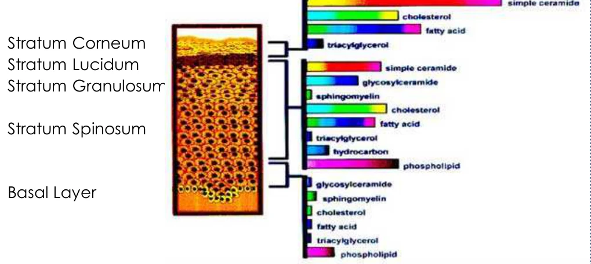
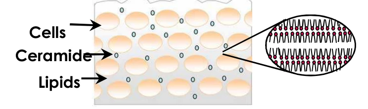

HOME
HOME- 원료소개
- 화장품원료
- Ceramide LC S-20
Ingredient research
Ceramide LC S-20
제형 적용을 돕는 액정형 세라마이드
01 / Overview & Strengths
개요 & 특장점
- Ceramide LC S-20은 당사 Ceramides 시리즈 중 하나로 제형을 용이하게 만들기 위해서 나온 제품입니다(Ceramide 20%가 함유) 액정 타입으로 물에 용해되며 가격이 합리적인 편입니다.
- 당사 세라마이드 시리즈 중 녹는점이 가장 낮습니다(50-55℃)
※ 자세한 자료는 직접 문의 부탁드립니다.
Product features / Product Strengths
- 보습 효과
- 피부보호 효과
- 두피보호 효과
- 주름방지 효과
02 / Technical Information
기술 자료
원료 기본 규격 및 제품 카탈로그
- INCI Name
- Propylene Glycol, Hydroxypropyl Bisstearamide MEA, Butylene Glycol, Dipropylene Glycol, Behenyl Alcohol, Ceteareth-20, Chloesteryl Isotearate, Squalane, Tricaprylin, Cholesterol, Cerearyl Alcohol, Stearic Acid, Dimethicone
- CAS No.
- -(EACH)
- M.O.Q.
- 2KG
- Pack Size
- 2KG
- Appearance
- Liquid Crystal
- Dosage
- 0.5~10%
03 / Research Data
기타 데이터
Introduction
- 세라마이드는 각질층(Stratum Corneum)에서 “피부 장벽 기능(skin barrier function)”을 담당하는 가장 중요한 지질입니다.
- 세라마이드는 “경피 수분 손실(trans-epidermal water loss)”을 줄이고 “표피 상층부의 응집력(cohesion of the upper layers of epidermis)”을 높입니다.
- 세라마이드는 전체 피부 지질의 약 40% ~ 65%를 차지합니다.

- 인체 각질층 세포 사이의 지질은 세라마이드가 다층 액정 구조(multiple liquid crystal structure)를 이루고 있습니다.
- 장벽 기능과 수분 손실 방지를 위해 액정(L.C) 형태가 중요합니다.

Why Liquid Crystal Form? — 액정형 세라마이드의 장점
1st Easy formulation간편한 제형화
- 세라마이드 고함량 (20%)
- 수상에 잘 녹는 용해성
- 바로 배합 가능
2nd High Quality높은 품질
- 강력한 장벽 기능
- 끈적임 없는 매끄러운 사용감 (실리콘과 다른 사용감)
Application
- 액정형은 물에 쉽게 녹고, 화장품에 배합된 뒤에도 “미세 액정 구조(micro liquid crystal structure)”를 유지합니다. 매우 안정적이며 유화 입자와 제품의 유동성에 영향을 주지 않습니다.
CompositionINCI Name
- Propylene Glycol
- Hydroxypropyl Bisstearamide MEA
- Butylene Glycol
- Dipropylene Glycol
- Behenyl Alcohol
- Ceteareth-20
- Cholesteryl Isostearate
- Squalane
- Tricaprylin
- Cholesterol
- Cetearyl Alcohol
- Stearic acid
- Dimethicone
- Phenoxy Ethanol
Commercialized Ceramide Products
- Ceramide PC-102 Hydroxypropyl Bislauramide MEA 1,3-bis(N-2-(hydroxyethyl)lauroylamino)-2-hydroxy propane · 분말 · 가용화 제품용 원료 보기→
- Ceramide PC-104 Hydroxypropyl Bispalmitamide MEA 1,3-bis(N-2-(hydroxyethyl)palmitoylamino)-2-hydroxy propane · 분말 · 유화 제품용 원료 보기→
- Ceramide PC-108 Hydroxypropyl Bisstearamide MEA 1,3-bis(N-2-(hydroxyethyl)stearoylamino)-2-hydroxy propane · 분말 · 유화 제품용 원료 보기→
-
Ceramide LC S-20현재 원료 Propylene Glycol, Hydroxypropyl Bisstearamide MEA, Butylene Glycol, Dipropylene Glycol, Behenyl Alcohol, Ceteareth-20, Cholesteryl Isostearate, Squalane, Tricaprylin, Cholesterol, Cetearyl Alcohol, Stearic acid, Dimethicone and Phenoxy Ethanol
원료 품질 시험 항목 및 기준
- Appearance
- Turbid, white to light yellow paste
- Odor
- Subtle characteristic odor
- pH
- 7.0 ~ 7.5
- Melting Point
- 50 ~ 55℃
- Assay (PC-108)
- 19~21%
- Heavy metals
- Max. 20 ppm
- Arsenic
- Max. 2 ppm
- Microbial count
- <100 cfu/g